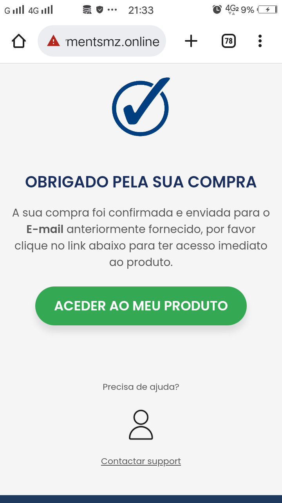

Sobre o eBook
Este eBook contém métodos naturais para resolver problemas como diabetes, dores no peito e pulmões, estresse, dores nas costas, dores de cabeça, problemas nos olhos e ouvidos.
Este eBook contém métodos naturais para resolver problemas como diabetes, dores no peito e pulmões, estresse, dores nas costas, dores de cabeça, problemas nos olhos e ouvidos.

"Finalmente encontrei algo eficaz para as minhas dores de cabeça! Estou muito satisfeito com os resultados obtidos através do livro."
- João M., Maputo"Estou extremamente feliz com o livro, pois está contribuindo para aliviar significativamente minha diabete."
- Maria L., Beira"O livro foi incrível! Acabou de vez com as dores intensas do meu peito, estou realmente impressionado com os resultados."
- José R., Nampula"Estou maravilhada com os efeitos do livro, pois consegui eliminar completamente as dores nos meus olhos."
- Ana P., QuelimaneClike em comprar agora, pagamento 100% automático e monitorado pelo m-pesa ou e-mola. recrbe o ebook em segundos apos a compra
Comprar AgoraO pagamento é feito de forma automática por e-mola ou m-pesa e é assegurado pelo m-pesa ou pela e-mola
Após o pagamento ser bem sucedido, será encaminhado para uma página onde tera um botão para baixar o livro, clikando em aceder ao produto irá baixa o livro, veja a baixo
